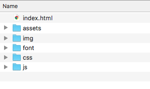
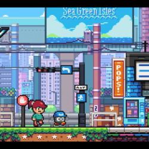

Three.js is a script that makes 3D in the browser.
The wikipedia page say this;
Three.js is a cross-browser JavaScript library and Application Programming Interface (API) used to create and display animated 3D computer graphics in a web browser. Three.js uses WebGL. The source code is hosted in a repository on GitHub.
It is one javascript file and runs on most phones, computers and TVs. Even if you don't know much (or any) javascript, once you know the rules you can start playing with it quite quickly.
I find that most of the basic things in games engines (controls, visuals, audio, interactivity) can be achieved in the browser. Where flash, unity and unreal engine use a stage, mouse clicks and textboxes, we do it with a code edit/save and a browser refresh.
There are options for a Graphic User Interface, like the official editor and a few engines that use three.js. You still must code to use three.js. Writing color:red is as easy as clicking around for it.
I used to use Flash around 20 years ago. Like photoshop, it was a good tool to make things. Then the format was forced out and we now have canvas to replace it. Like it or love it, it does the same sort of things by default in the browser, without the need of updating a plugin. To do the same things as we used to do in flash takes coding. That is a barrier, but it shouldn't be hard to cross. It is essentially lights, camera, action on a stage.
Sometimes we can face browser security and server functionality issues, so I run my three.js projects with XAMP server on mac OS. This makes my laptop behave like a web server.
I have a folder on my hard drive full of three.js project folders. Inside each folder is an index.html file and the three.js file.
I like to keep all js/css in one file. Sometimes I start with the official three.js docs basic example.
I like to use open source assets and modify them. Opengameart.org is a good place for assets. Much respect to grafxkid for his amazing work that I love to use.
All the code is available in the source or on github.